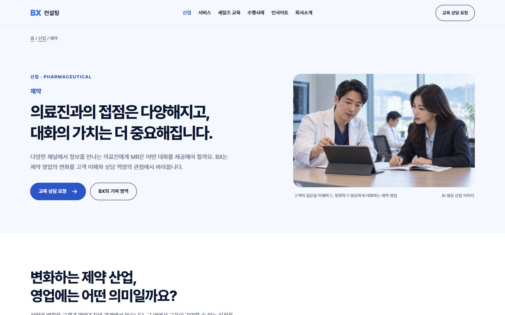
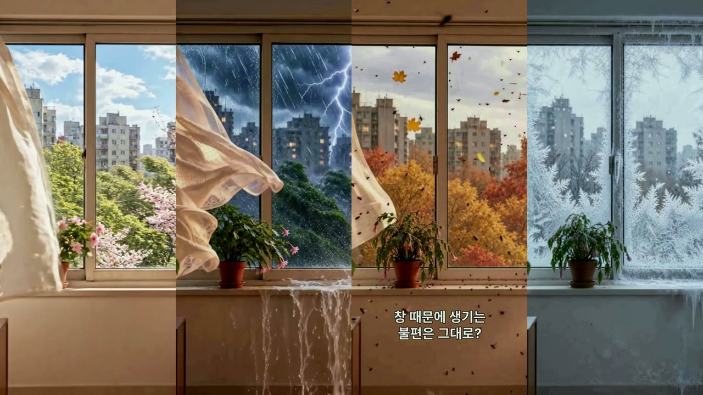
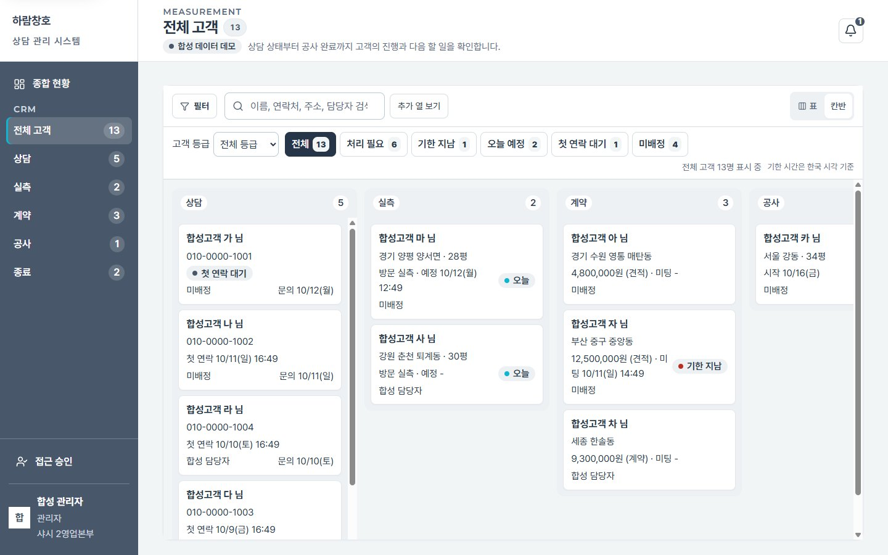
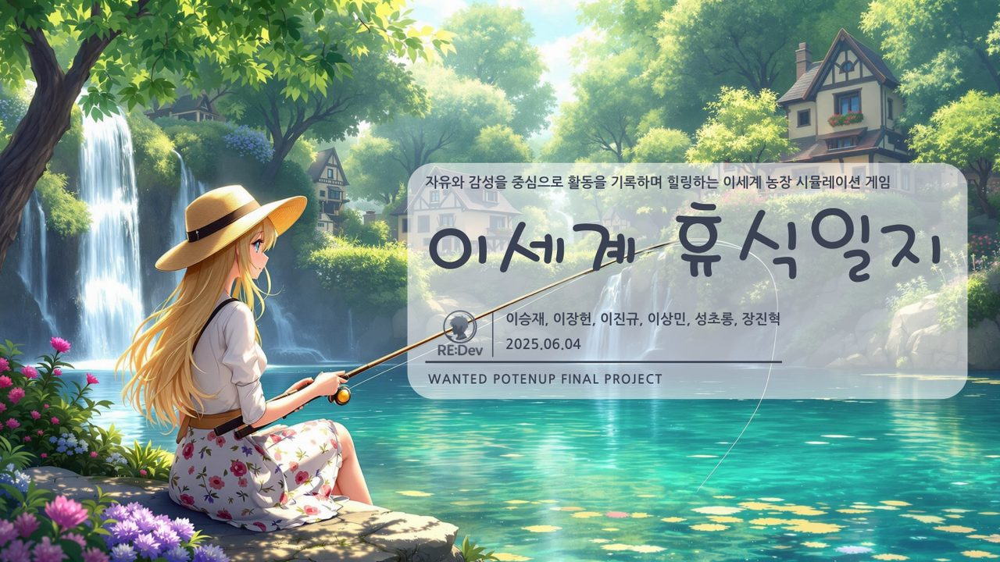
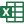

분화 후 첫 입문교육을 변화된 환경·사람과 함께 진행
입문교육내부강사온라인교육
- 내 역할
- 새롭게 분화된 조직에 맞는 강의 슬라이드와 대본, Padlet 사전과제, 게임형 콘텐츠를 제작하였고 강사 리허설과 Zoom 회의실 운영을 담당하였습니다.
- 결과
- 총 40명이 참여하였고, 참가자 만족도는 5점 만점에 4.28점이었습니다(설문 응답 18명).
대표 사례 세 건을 먼저 넘겨 보고, 아래에서 전체 프로젝트를 확인할 수 있습니다.

구성원의 학습 수요를 운영 제도로 정리하고, 내부 강사진과 협업하여 교육을 운영하였으며, 낯선 제도의 도입을 설명하고 조율한 경험입니다.
한살림 온라인 입문교육분화 후 첫 입문교육 기획·운영자체 교육으로 전환 → 강사진 리허설 → 온라인 운영입문교육내부강사온라인교육
한살림
내부 학습모임 제도학습 수요조사부터 활동비 정산 기준까지 제도 구축수요조사 → 신청·운영 → 활동비 정산학습조직수요조사활동비정산
한살림
 OKR 도입 기획OKR 도입 설명자료 제작과 1:1 설명설명자료 제작 → 1:1 설득 → 도입 공감대변화관리OKR1:1소통
한살림
OKR 도입 기획OKR 도입 설명자료 제작과 1:1 설명설명자료 제작 → 1:1 설득 → 도입 공감대변화관리OKR1:1소통
한살림
교육 현장 준비와 검수 자동화, 홈페이지와 영상 콘텐츠 제작, CRM 프로토타입 순으로 정리하였습니다.

창호 홍보 숏츠 기획·제작창호 업체 홍보 숏츠의 콘셉트, 스토리보드, 제작콘셉트 → 사계절 스토리보드 → 생성 → 편집·마감숏폼기획후킹설계AI영상 2026.10
영업 CRM 프로토타입고객사 제안용 CRM 프로토타입의 요구 정리, 화면 결정, 검수요구 정의 → 화면 결정 → 구현 → 검수요구정의업무흐름설계AI협업 2026.09AI 비서 과정은 개인 과제, KHIDI 입문교육은 팀 실습으로 진행하였고, 15분 강의는 직접 진행하였습니다.
AI, 언리얼 개발자와 함께 게임 기획, 사용자 흐름, 일정, QA를 총괄한 융합 프로젝트입니다.

이세계 휴식일지힐링 농장 게임 · 6인 융합팀 총괄 PM기획 → 일정 관리 → QA프로젝트관리융합팀PMQA 2025.04 ~ 06AI를 활용하여 빠르게 만들고, 결과물은 제 기준으로 검토하며, 함께 일하는 사람들과 공유하고 논의합니다. 각 기준을 보여 주는 사례를 연결하였습니다.
적용 사례 한살림 입문교육, 내부 학습모임 제도.
적용 사례 브로셔 검수 스킬, 비엑스컨설팅 홈페이지 시안 작업.
적용 사례 비엑스컨설팅 홈페이지 시안 작업, 창호 홍보 숏츠.
총 경력 3년 11개월 · 인턴 재직 중
학습 범위 및 역할
채용, 평가, 보상, 교육, 조직에 생성형 AI를 적용하는 실무 과정을 수료하고, AI 에이전트, RAG 챗봇, 업무 자동화, 교육 콘텐츠 제작을 실습하였습니다. 수료 과제로 KHIDI 신입 입문교육 제안과 AI 비서 8시간 과정을 설계하였습니다.
AI 서비스 기획, 데이터 수집·NLP 분석, 생성형 AI 콘텐츠 제작을 프로젝트 기반으로 학습하고 이세계 휴식일지 프로젝트를 수행하였습니다.
각 툴을 실제 프로젝트에서 어떻게 활용하였는지 함께 정리하였습니다.
입문교육 강의 슬라이드와 대본, OKR 설명자료 21장을 PowerPoint와 Canva로 제작하였고, Zoom과 Notion으로 온라인 교육을 운영하였습니다.
ChatGPT와 Claude로 교육 기획서와 교안 초안을 작성하고, NotebookLM과 Perplexity로 자료를 요약하며 출처를 교차 확인하였습니다. 양성과정에서는 Gemini Deep Research로 HR 트렌드를 조사하고 Gems로 업무 챗봇을 구성하는 실습을 하였습니다.
Claude Code로 브로셔 검수 스킬을 만들어 수정사항 PPT 13건을 작성하였고, Next.js, Supabase, Cloudflare 기반의 영업 CRM 프로토타입은 요구 정리, 화면 결정, 검수를 맡아 AI 에이전트와 함께 제작하였습니다. 포트폴리오는 HTML과 CSS로 제작하여 GitHub로 배포하였습니다. 양성과정에서는 Antigravity로 AI 비서 실습 예제를 만들고, Apps Script로 이력서 수집 폼, Python으로 평가점수 분석 보고서, Excel VBA로 지원자 데이터 정리를 실습하였습니다.

Excel교육 현장에서의 운영 경험과 AI를 활용한 업무 경험을 정리하였습니다.
한살림동서울에서 입문교육을 직접 기획하고 운영하면서 교육 기획·운영 업무에 관심과 흥미를 갖게 되었습니다.
AI가 각광받으면서 AI를 배워야겠다는 생각으로 퇴사를 결심하였고, 퇴사 이후 AI 데이터분석 부트캠프와 AI 과정개발 및 교육담당자 양성과정에 참여하며 AI 실무 기술을 익히고 교육 참여자로서의 생각과 필요성을 경험하였습니다. 이제는 제가 배운 것을 현업에서 실무로 활용하기 위해 노력하겠습니다.
저는 AI를 통해 빠르게 가설을 검증하고, 프로토타입을 제작하고 콘텐츠를 생산해내는 강점을 가지고 있습니다.
만약 함께 일하게 되면 먼저 기존 시스템을 점검해 개선·효율화할 수 있는 부분을 찾아내고 동료들과 협의하여 최선의 방향을 설정할 수 있도록 기여하겠습니다.
교육 운영과 콘텐츠 제작 업무에서 함께할 기회가 있다면 연락 주시기 바랍니다.